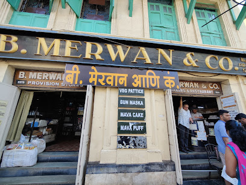

Known best for its extremely delicious Mughlai specialities at maddeningly low prices, the best food items to try at Gulshan-e-Iran range from their Kheema pav, to the chicken tikka masala, Garlic Naan, Rabdi Kulfi and Firni for dessert.
Bhendi Bazaar is home to some of the best street food places in Mumbai. The best time to visit Mohammad Ali road (where Noor Mohmaddi is, along with a lot of other great restaurants and roadside Kabab joints) is during Ramadan.
Service options: Dine-in · Takeaway · Delivery
Address: 179, Wazir Building, Abdul Hakim Chowk, Bhendi Bazar, Near Girgaum, Mumbai
3.Bun Maska and Mava Samosa of Mervan’s
Run into Merwan’s for some mouth-watering pastries, tea cakes and cookies to soothe your sweet tooth! A big name on this side of town
Address:Ali Bhai Remji Road, Opposite Station, Grant Road East, Mumbai

4.Tandoori Delicacies at Jai Jawan
It has the best non-veg dishes on that side and is hardly ever forgotten. Once you eat here, you become a loyal customer!